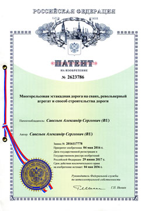

Архивный раздел сайта:
Из переписки с министерствами, ведомствами, инстанциями
Цель переписки: поиск поддержки и содействия для реализации проекта МРЖД и предложение строительства автоматической транспортной системы на основе многорельсовой железной дороги.
Патенты:
Патент №2439236

«Многорельсовая железная дорога и поезд с механизмом поперечного перемещения»
Патент №2623786
«Многорельсовая эстакадная дорога на сваях, револьверный агрегат и способ строительства дороги»